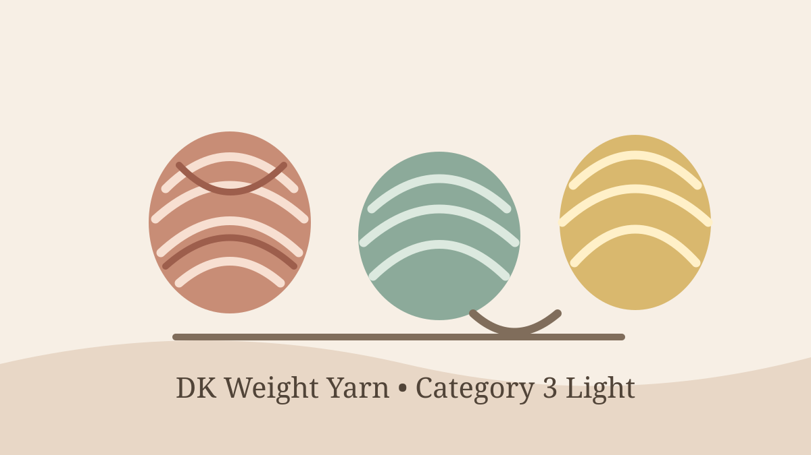
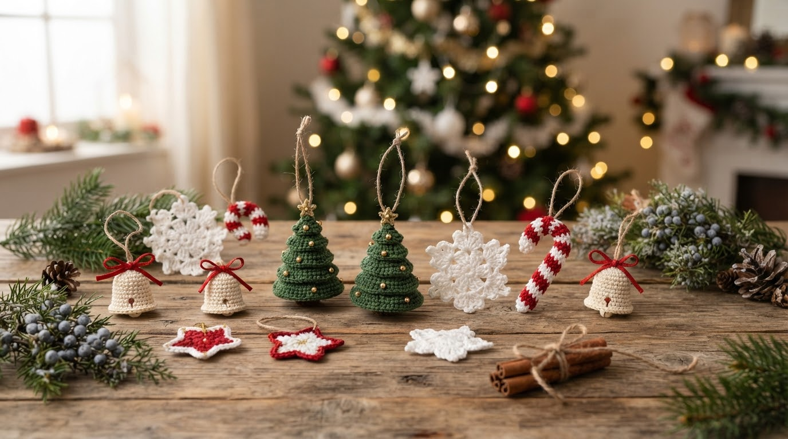
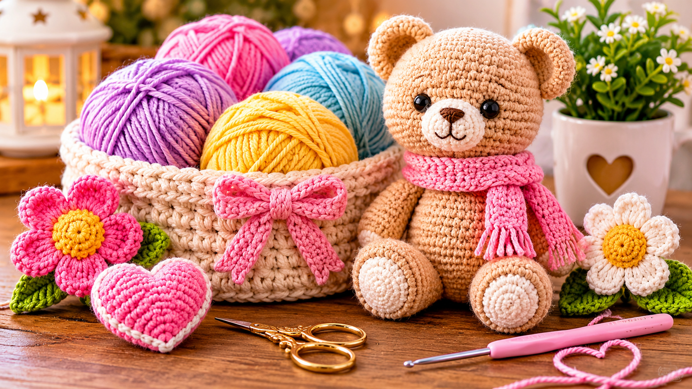
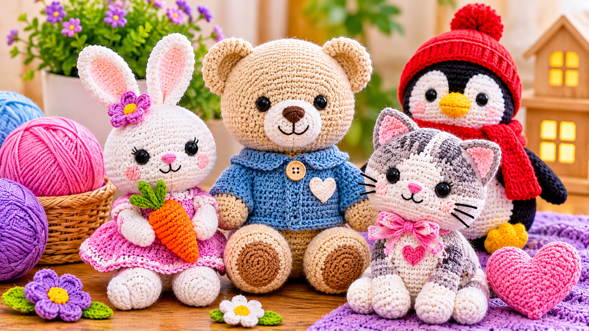

Buying Guide
Buying GuideNovember 25, 2026
Best Amigurumi Crochet Kits: What to Look for Before You Buy
Compare yarn, hooks, patterns and kit contents before choosing an amigurumi crochet kit or beginner-friendly crochet animal set.
Read Article →Browse all our crochet and knitting guides.
Buying GuideCompare yarn, hooks, patterns and kit contents before choosing an amigurumi crochet kit or beginner-friendly crochet animal set.
Read Article → Buying Guide
Buying GuideLearn what to look for in a beginner crochet kit, compare hooks and accessories, and check a portable starter set before buying.
Read Article → Knitting Patterns
Knitting PatternsExplore twelve shawl styles, plus practical advice on yarn weight, needles, gauge, pattern reading, and finishing.
Read Article →
Yarn GuideLearn what DK yarn means, its category, recommended hook and needle ranges, project ideas, and how it compares with worsted yarn.
Read Article → Crochet Ideas
Crochet IdeasTurn leftover yarn into coasters, granny squares, bookmarks, flowers, baskets, accessories, and other useful crochet projects.
Read Article → Yarn Guide
Yarn GuideUnderstand Category 4 medium yarn, recommended hook and needle ranges, project ideas, and how worsted compares with DK yarn.
Read Article → Crochet Tutorial
Crochet TutorialLearn how to hide yarn tails, weave in loose ends with a tapestry needle, and give crochet blankets and granny squares a neat finish.
Read Article → Crochet Tutorial
Crochet TutorialLearn a simple single crochet edging, how to space stitches around the sides, shape neat corners, and choose easy decorative borders.
Read Article → Crochet Tutorial
Crochet TutorialLearn the classic granny square step by step, from the center ring and basic stitches to neat corners, color changes, and simple project ideas.
Read Article → Crochet Tutorial
Crochet TutorialLearn how to choose yarn and a hook, practice basic stitches, crochet even rows, add a border, and finish your first blanket.
Read Article → Yarn Crafts
Yarn Crafts
Discover ten beginner-friendly yarn projects, including pom-poms, tassels, bookmarks, wall art, and simple crochet.
Read Article → Buying Guide
Buying Guide
Confused about which yarn to buy for your first project? Read our complete breakdown.
Read Article → Tutorial
Tutorial
Learn the pencil grip and knife grip methods to make your hands less tired.
Read Article → Pattern
Pattern
Create a cozy, chunky blanket in just one weekend with this pattern.
Read Article →
Buying Guide
Struggling with hand pain? Discover the best ergonomic hooks that reduce fatigue.
Read Article → Tutorial
Tutorial
Learn how to read a crochet pattern step-by-step. Understand abbreviations and symbols easily.
Read Article →
Christmas CrochetDiscover 5 easy crochet Christmas ornament ideas for beginners, including handmade Christmas trees, stars, snowflakes, bells, and candy canes. Create beautiful DIY Christmas decorations with simple crochet techniques.
Read Article →
AmigurumiExplore modern crochet plush trends, yarn choices, stitching techniques and finishing tips.
Read Article → Crochet Ideas
Crochet IdeasChic Stitches: Modern Amigurumi Ideas to Elevate Your Crochet Amigurumi—the Japanese art of crocheting small, stuffed yarn creatures—has exploded in...
Read Article Image: Pixabay
Crochet IdeasChic & Cozy: Modern Amigurumi Plush Ideas for the Contemporary Crafter Amigurumi has traveled far beyond the realm of bright, novelty trinkets. Today’s...
Read Article Image: PixabayCompare cotton, acrylic blends, t-shirt yarn and more to find durable yarn that helps handmade crochet bags hold their shape.
Read Article →